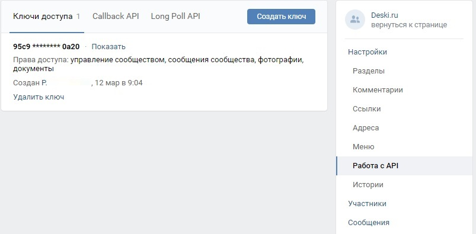
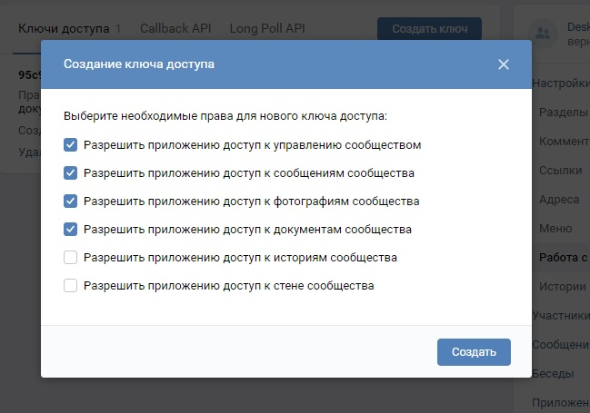
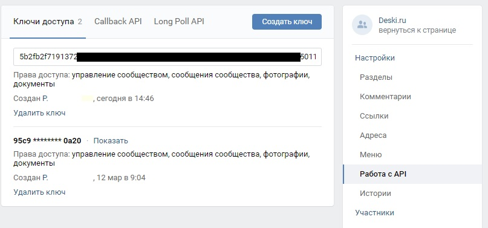
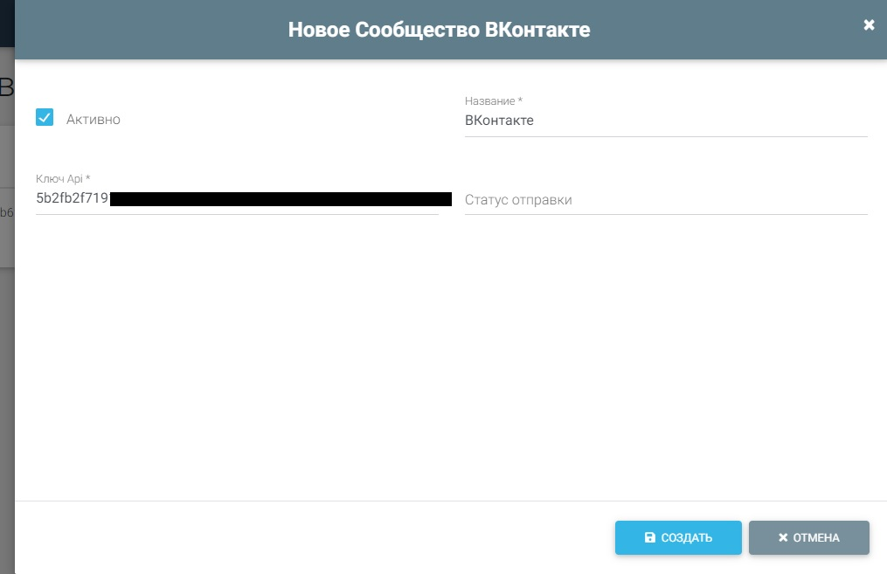
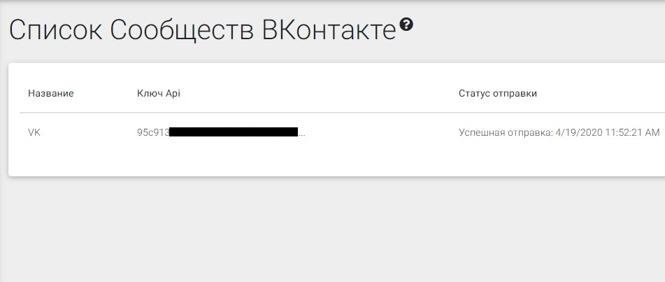
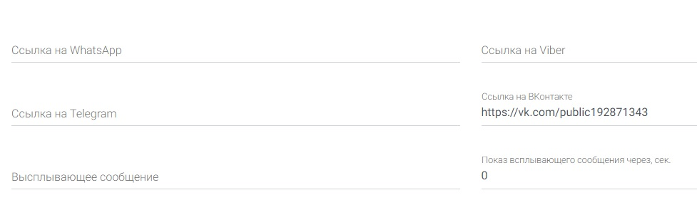
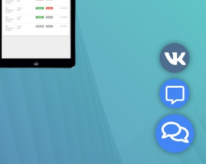

Интеграция с сообществом ВКонтакте
В нашей сервисе можно отвечать на сообщения в группе ВКонтакте. Для этого необходимо создать ключ API и добавить канал в личном кабинете Deski.ru
Создание ключа API
- Перейдите в настройки сообщества ВКонтакте
- Откройте раздел Работа с API
- Нажмите Создать ключ.
-
Отметьте пункты:
- Разрешить приложению доступ к управлению сообществом
- Разрешить приложению доступ к сообщениям сообщества
- Разрешить приложению доступ к фотографиям сообщества
- Разрешить приложению доступ к документам сообщества
- Скопируйте ключ API



Создание канала в личном кабинете Deski.ru
Создайте новый канал.
- Укажите произвольное имя, которое будет отображаться в левом меню.
- Вставьте ключ Api, созданный в шаге выше.
- Сохраните канал. Теперь канал настроен для приема/отправки сообщений.

Проверка работоспособности канала
- Для проверки канала напишите сообщение в вашу группу ВКонтакте.
- В разделе Заявки должно появится новое обращение. Напишите сообщение в личном кабинете Deski.ru
- Перейдите в раздел Сообщества ВКонтакте. При упешной отправке сообщения отобразится текст об успешной отправке.

Ссылка на Сообщество ВКонтакте
Чат для сайта Deski.ru поддерживает размещение ссылки на сообщество ВКонтакте. Укажете в поле Ссылка на ВКонтакте ссылку на ваше сообщество

